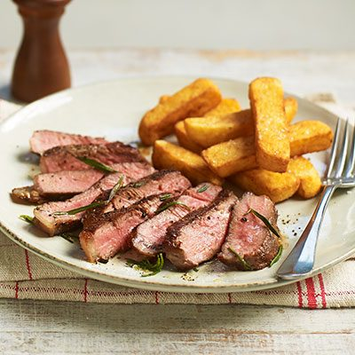

Sirloin Steak

Description
A beautiful cut of sirloin steak, perfectly cooked to medium rare, the best way to be cooked!
It's served with a side of golden brown chunky chips, that are made within minutes, and compliments well with steak.
Easy and simple, our way of cooking will satisfy
any kind of chefs out there, as we turn cheap and easy to get ingredients into a restaurant quality taste.
Ingredients
- Sirloin Steak
- Potatoes
- herbs and spices
- butter
- lemon
Instructions
- Peel one portion potato and cut it into a tiny rectangular shape
- Onced cut, start heating some oil in a deep saucer pan
- Cook chips until golden brown, around 8-10 mins
- Before frying the steak it needs to be well seasoned with salt and pepper on both sides
- cook the steak for 2 and a half minutes on both side
- After the first flip put in your butter and squeeze some lemon
- Coat the steak with the melted butter, repeat this process until steak is cooked to medium rare